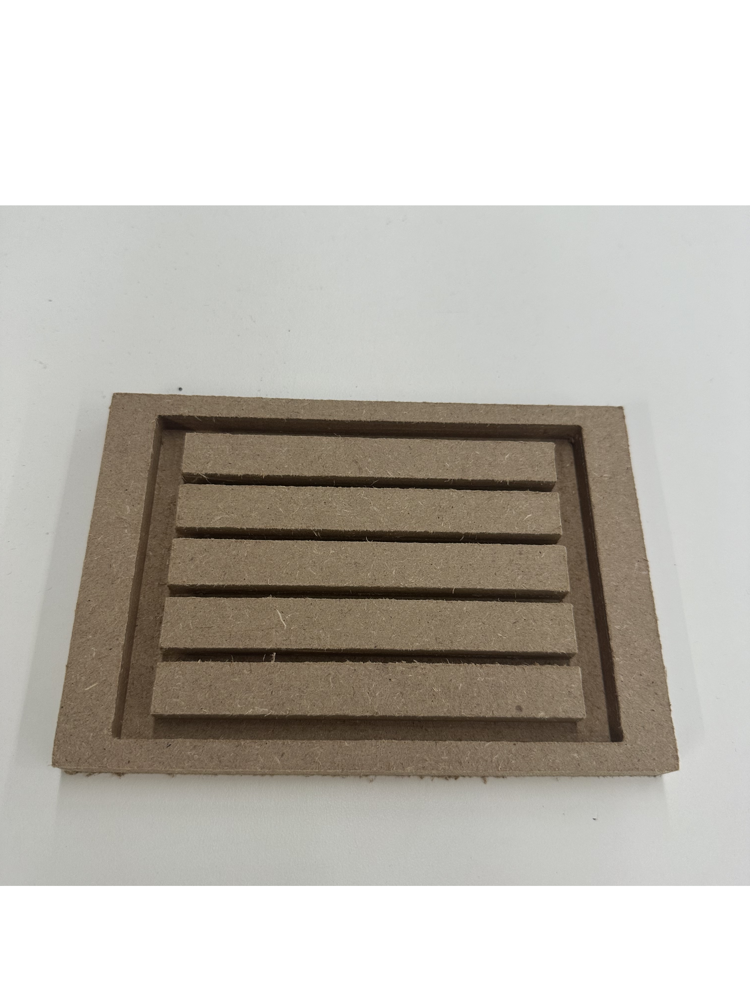
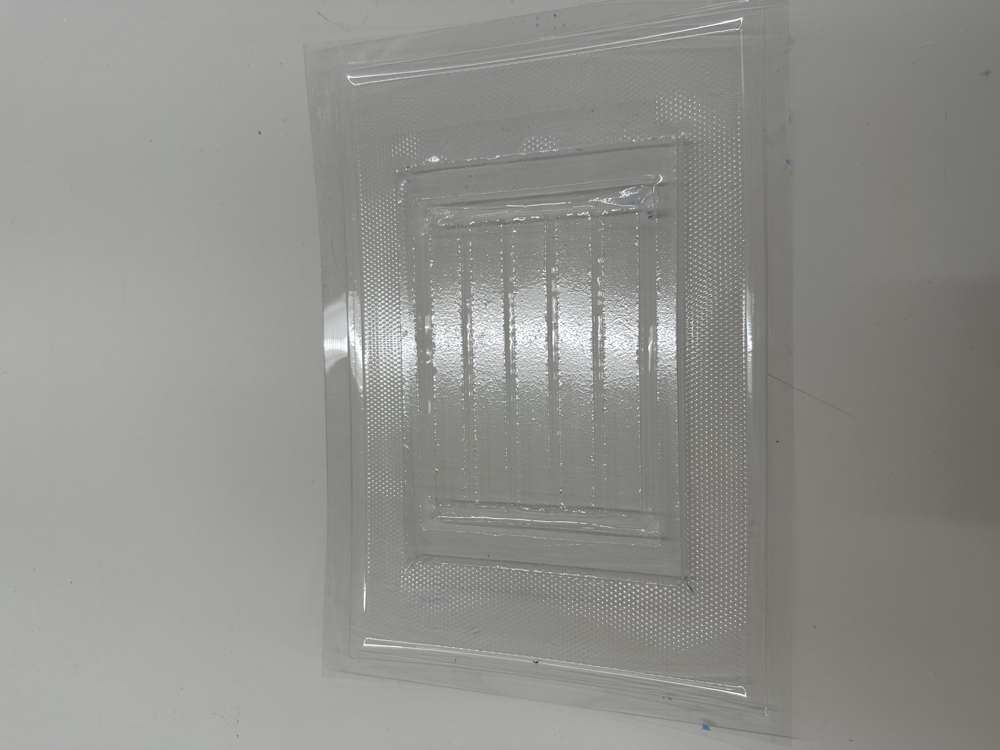
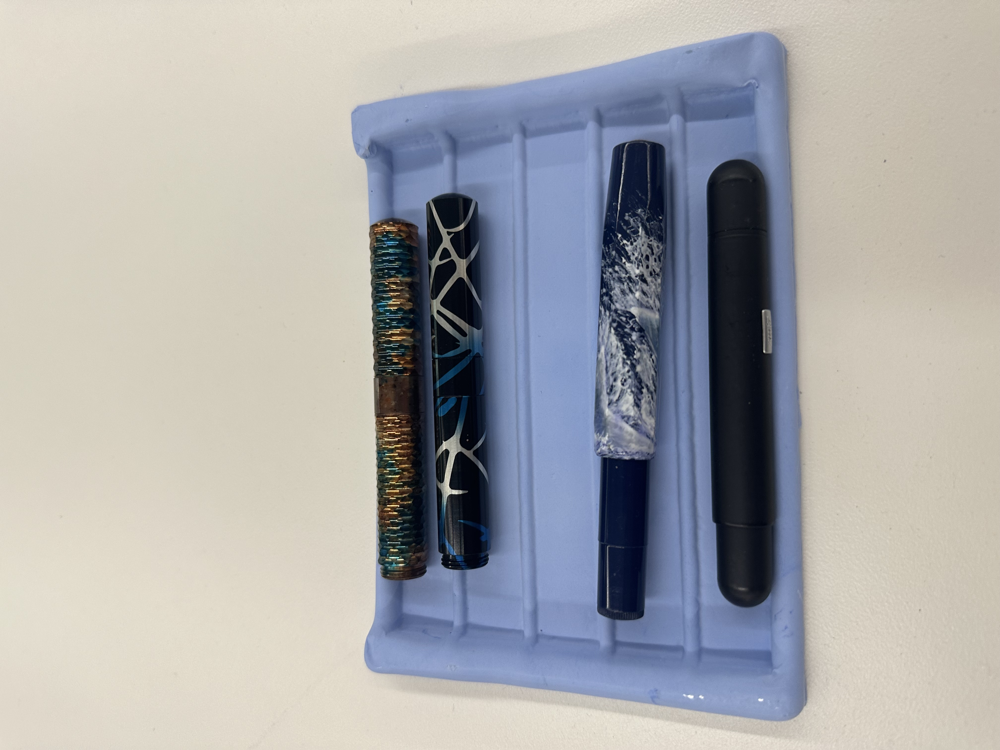

For the CNC assignment I decided to do a pen stand for my pocket pens. I own a lot of pocket pens and they never look good on normal pen stands so I wanted to design and create a smaller pen holder for them. I did it in multiple steps: 2D design, CNC milling, vacuum forming and casting it from plaster.
Firstly, I designed a negative of the pen holder and milled it. I used 0.5 in MDF to carve.

You can find the dxf of my pen stand from this onshape link.
Secondly, I filed the sides of the MDF for better vacuum forming and then vacuum formed it. It came out useable but not perfect because of the short interval length between the pillars.

Lastly I mixed plaster with water and added some blue in it to make it look better. Then I poured it to my vacuum formed mold and waited 2-3 hours and took it out. Even though the vacuum forming wasn't perfect it came out usable. Maybe in the future I can try a second iteration with larger gaps between them.
